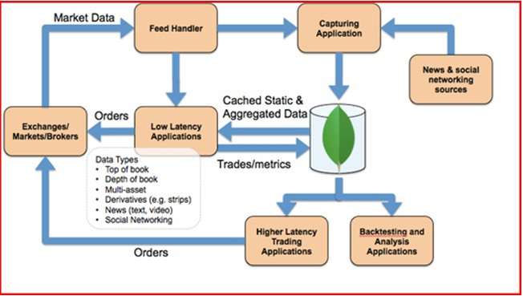

記錄如何使用MongoDB .NET Driver 取用MongoDB內的資料
先前介紹了如何使用MongoDB的UI工具來管理裡面的data，今天就讓我們實際透過MongoDB .NET Driver來透過ASP.NET Core連接至MongoDB內的資料
MongoDB .NET Driver
MongoDB .NET Driver是一個讓我們可以連接至MongoDB Instance的組件，架構如下：

它從V2.3.0 開始支援.NET Core的開發．
Library Reference
MongoDB .NET Driver 的安裝可以手動加入project reference後還原或是透過NuGet幫我們添加完成
Manually
在專案加入以下Reference:
<ItemGroup> <PackageReference Include="MongoDB.Driver" version="2.4.3" /> </ItemGroup>.NET CLI
我們也可以透過CLI直接加入
dotnet add package MongoDB.Driver
這邊無論手動或自動皆需要執行還原指令將Library透過nuget作載入
dotnet restore
Setup MongoClient
我們可以透過以下方式來建立連線(這邊連線沒有特別使用者帳密):
// To directly connect to a single MongoDB server
// (this will not auto-discover the primary even if it's a member of a replica set)
var client = new MongoClient();
// or use a connection string
var client = new MongoClient("mongodb://localhost:27017");
// or, to connect to a replica set, with auto-discovery of the primary, supply a seed list of members
var client = new MongoClient("mongodb://localhost:27017,localhost:27018,localhost:27019");
稍微注意一下，對於相同資源的存取，通常都是重複使用同一個MongoClient，所以建議寫成singleton會比較方便使用與管理．
Get a Database
而當我們設定好client後，就可以來指定要連線的Database(假設我們的database 名稱為foo):
var database = client.GetDatabase("foo");
Get a Collection
而當設定好Database後，我們需要將要取得的collection都指定好(假設我們的collection 名稱為bar):
var collection = database.GetCollection<BsonDocument>("bar");
上面的BsonDocument是指我們要使他回傳後處理接收的class為何．我們今天也可以客制一個class去繫結回傳的類型，如果我們希望回傳的類型為Member，則可以新增一個類別如下
using MongoDB.Bson;
using MongoDB.Bson.Serialization.Attributes;
namespace NetCoreTest.POCOs
{
public class Member
{
public ObjectId Id { get; set; }
[BsonElement("mongo-attribute-name")]
public string Name { get; set; }
}
}
而collection這邊則稍微修改為：
var collection = database.GetCollection<Member>("bar");
Get Collection data
而當我們設定好上述內容後，其實我們還沒有正式的建立連線，我們需要將要取得的collection都操作都指定好才會開始將剛剛的連線建立，所以如果上面有錯(如帳號密碼設錯)實際上會拋出錯誤在這一行：
var list = collection.Find(new BsonDocument()).ToList();
How to get data from MongoLab
而先前示範的是沒有帳號密碼的MongoDB Instance如何連線，但實務上不可能資料庫連線沒有帳號密碼，所以我們就要改用MongoCredential來建立連線，這邊我們已Mongo Lab的連線來做實際範例(記得先至MongoLab將你的database與collection以及user資料都將好，並新增一筆資料在collection內)，接著我們就可以透過下面的程式取得資料：
var mongoCredential = MongoCredential.CreateCredential(<database name>, <user account>, <password>);
var mongoClientSettings = new MongoClientSettings {
Credentials = new []{mongoCredential},
Server = new MongoServerAddress(<domain>,<port>)
};
var client = new MongoClient(mongoClientSettings);
var database = client.GetDatabase(<database name>);
var collection = database.GetCollection<Member>("member");
var list = collection.Find(new BsonDocument()).ToList();
[補充說明]Mongo and NOSQL
MongoDB是 NoSQL(Not Only SQL)的一種，整個NoSQL主要可以分為四種不同用途
| 分類 | 產品實例 | 應用場景 | 數據模型 | 優點 | 缺點 |
|---|---|---|---|---|---|
| In-Memory | Redis, VoltDB | 内容缓存，主要用于处理大量数据的高访问负载，也用于一些日志系统等等。 | Key 指向 Value 的键值对，通常用hash table来实现 | 尋找速度快 | 數據無結構化 |
| Document-Oriented | MongoDB, CouchDB | 以獨立的文件檔案儲存 | Key-Value对应的键值对，Value为结构化数据 | 数据结构要求不严格，表结构可变，不需要像关系型数据库一样需要预先定义表结构 | 查询性能不高，而且缺乏统一的查询语法。 |
| Column Store | Cassandra, Apache HBase, Riak | 分布式的文件系统 | 以列簇式存储，将同一列数据存在一起 | 以列簇式存储，将同一列数据存在一起 | 功能相对局限 |
| Graph | Neo4J, OrientDB | 社交网络，推荐系统等。专注于构建关系图谱 | 图结构 | 利用图结构相关算法。比如最短路径寻址，N度关系查找等 | 很多时候需要对整个图做计算才能得出需要的信息，而且这种结构不太好做分布式的集群方案 |
而MongoDB本身是一種「文件」為主題的資料庫。他沒有Schema，存放的格式為BSON。
BSON（Binary JSON），其實就是JSON的輕量化版本，其中有些差異並非完全相同，不過BSON範圍包含JSON是沒錯的。